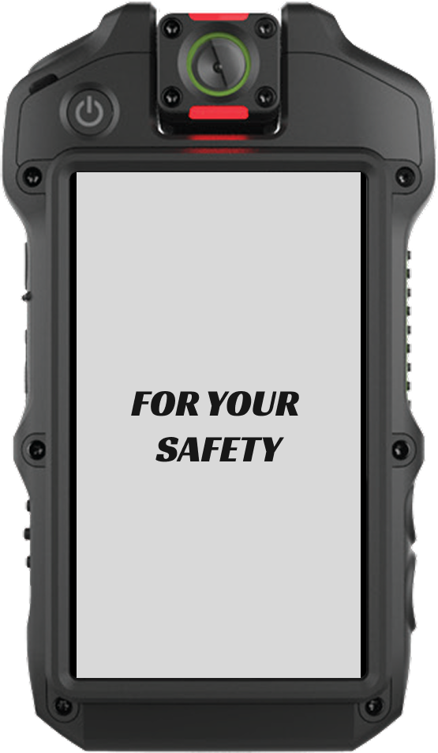
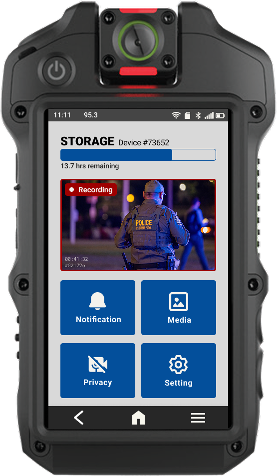
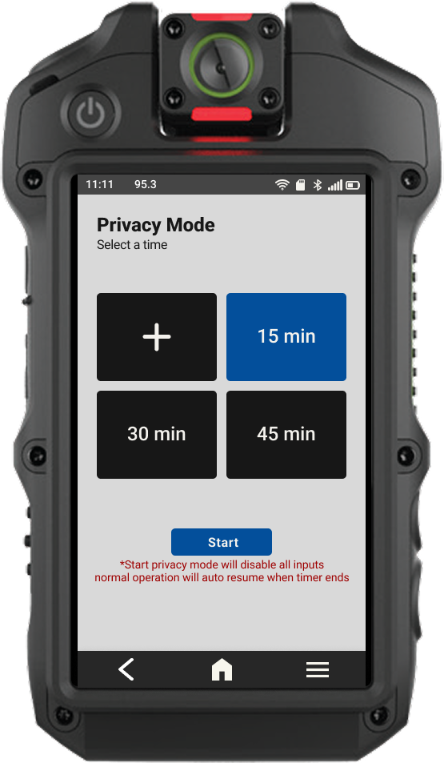

BODY-WORN CAMERA
UI/UX REDESIGN
Human-Centered Design · UX Research · Workflow Analysis · Interaction Design · Figma
Class Project, University of Miami | January - March 2026
Designing an intuitive interface for high-pressure field operations, using workflow analysis and human-centered design principles to prioritize critical actions, reduce cognitive load, and make device states easier to understand.



My role
UI/UX Designer on a team project
Screens I designed
Login, home screen, covert mode, and privacy (break) mode
Display
307px-wide wearable screen, used in high-stress field conditions
Timeline & tools
January - March 2026 · Figma
My Role
Design ownership
Owned the login, home screen, covert mode, and privacy (break) mode designs, from task flows and wireframes to high-fidelity Figma screens.
Consistency across the team
Created many of the team's reusable Figma components and variants, and reviewed teammates' screens for typography, component styles, spacing, and alert behaviors so the interface stayed consistent.
Team support & coordination
Helped define layout rules and interaction patterns, shared Figma guidance, and supported teammates with file organization.
The Challenge
Law enforcement agencies rely on body-worn cameras (BWCs) to improve transparency, evidence quality, and officer safety. But as adoption has increased, so has the volume of recorded footage. Agencies now manage terabytes to petabytes of video, creating a serious data-management problem.
Officers are required to review, download, categorize, and tag footage at the end of their shifts. Mis-tagging can lead to evidence loss. Manual tagging consumes hours of time that could otherwise be spent on patrol. Research shows that even ten minutes of footage can take an hour to redact or classify.
Tagging was one clear pain point, but it sits inside a bigger question about the device itself: officers operate it under stress, often with gloves, on a very small screen, at moments when attention is already stretched.
How can we make a complex, high-stakes device easier and safer to operate by reducing unnecessary decisions and making critical information immediately accessible?
Designed in this project
Simplify critical on-device interactions
Recording status, login, covert mode, and privacy mode, the moments where a wrong or slow action carries the most risk.
Research-driven concept
Reduce after-shift tagging workload
A hybrid AI and voice tagging workflow with human validation, proposed from research. It was not designed as UI screens in this project.
- 01 ResearchUnderstand the user
- 02 Task AnalysisIdentify what matters most
- 03 Interaction DesignReduce decisions and errors
- 04 UI DesignTurn decisions into interfaces
01 · Research
Understand the user
Users
Primary: patrol officers.
Secondary: supervisors, dispatchers, and evidence managers.
Key user needs
- Reliable recording with clear status feedback
- Low cognitive load in the field
- Less after-shift paperwork
- Clear evidence retrieval
- Strong chain-of-custody security
Constraints
- Small, 307px-wide screen
- Field conditions: stress, gloves, movement, low visibility
- Legal and policy rules
- Privacy
- AI misclassification risk
- Hardware and software limits
Pre-stage research
I surveyed BWC brands, evidence management systems, common device complaints, and existing AI tagging precedents. The research pointed toward a hybrid approach: AI support with human validation, rather than full automation.
13 pages · opens in a new tab
Research-driven concept · not prototyped
AI-assisted tagging with human validation
Tagging helps agencies find the right videos fast so they can respond legally and on time. But officers must tag every video as evidentiary or non-evidentiary and categorize the incident type by the end of each shift. Tagging is repetitive and requires concentration, and a mis-tag may lead to permanent deletion of important evidence or problems with legal disclosure.
The proposed workflow combines voice input and AI auto-tagging: the officer's voice-input tags are compared with AI-generated tags, and any conflict is sent to human review.
02 · Task Analysis
Identify what matters most
Tasks were ranked by frequency, complexity, importance, and operational impact. Life-safety functions and recording visibility come first, so they get the fastest, most visible paths; everything else is kept out of the way.
High-priority core tasks
Powering on, starting a recording, activating the emergency alert, entering and exiting covert mode, powering off.
Supporting tasks
Uploading media, tagging media, disabling sources of input, adjusting volume, adding notes to media, viewing media.
Task map, high to low priority. Select to enlarge.
Sketches
Select a sketch to enlarge, then use the arrows to browse.
03 · Interaction Design
Reduce decisions and errors
For each flow I owned, the goal was to make the safe action the easy one and to make every state change impossible to miss.
Prevent accidental changes
Covert mode uses a press-and-hold on a physical button, so the timing itself prevents accidental activation.
Confirm without the screen
Indicator lights and vibration confirm covert-mode changes while the screen stays dark.
Never forget a state
Privacy mode runs on a visible countdown with a prominent Stop button, and asks the officer to acknowledge when recording resumes.
Status first
Recording status sits at the top of the home screen, with large tap targets for gloved, fast input.
Annotated wireframes for each flow I owned. Select any wireframe to enlarge it, use the arrows to move between them, and Zoom to 100% to read the small notes.
Covert mode
The BWC frame is used due to no screen design involved for this feature.
Why this workflow was selected
Covert mode relies on physical button interaction instead of on-screen UI. Press-and-hold timing prevents accidental activation. Indicator lights and vibration provide confirmation without requiring screen interaction. The screen stays off during activation to maintain discretion.
How the design supports user needs
Users may need to activate covert mode quickly and without drawing attention. Keeping the screen off reduces visibility. Light and vibration feedback confirm state changes without sound or visual distraction. The return-to-normal buzz confirms the device is back to standard operation.
Constraints and assumptions
This feature assumes high-risk or sensitive situations where visibility must be minimized. The design avoids on-screen prompts to reduce exposure. Feedback is limited to subtle physical cues. The workflow prioritizes security, speed, and discretion.
Power on & login
Why this layout was selected
The startup screen is simple and centered to clearly show the device is powering on. The passcode screen uses large, spaced buttons for easy input. Officer ID is shown at the top to confirm device ownership. The abnormal activity alert appears clearly at the top to explain why re-entry is required.
How the design supports user needs
Users need fast and secure access. Large buttons support quick entry in field conditions. The randomized keypad increases security. Clear alert messaging reduces confusion if the device locks.
Constraints and assumptions
The screen is small, so the layout is vertical and minimal. Users may be wearing gloves or under stress, so tap targets are large. Security is a priority, so passcode protection and activity detection are built in.
Home screen
Why this layout was selected
The home screen is structured vertically to keep information clear. The current radio channel is at the top. Recording status is placed directly below it for quick visibility. The recording preview is tappable to access the camera. Main features use large buttons. Navigation stays fixed at the bottom.
How the design supports user needs
Users need to quickly see if they are recording and what channel they are on. The red “Recording” label clearly confirms active recording. The “Stand By” state avoids confusion. Large buttons support fast access and reduce mistakes.
Constraints and assumptions
The screen is small, so the layout is stacked and simple. Important information is placed at the top. Tap areas are large for quick use in field conditions.
Privacy mode
Why this layout was selected
The privacy mode screen uses large timer options for quick selection. Default time presets allow fast access, while a custom option gives flexibility. The countdown screen clearly shows remaining time in large text. The Stop button is placed prominently for quick exit. A pop-up confirmation appears when normal operation resumes to ensure the user is aware.
How the design supports user needs
Users need clear control over when privacy mode starts and ends. Large timer buttons reduce errors. The visible countdown keeps users aware of remaining time. The Stop button allows immediate return to normal operation. The acknowledgement pop-up confirms the state change.
Constraints and assumptions
The screen is small, so content is stacked vertically with strong hierarchy. Users may be under stress, so actions are clear and direct. Text is minimal. Privacy mode must be obvious when active and when it ends to avoid confusion.
04 · UI Design
Turn decisions into interfaces
The final Figma screens carry those decisions into a consistent visual system: one clear hierarchy, shared components, and distinct mode indicators so officers can tell at a glance whether the device is recording, on standby, in privacy mode, or in an emergency state.
Power on and login → home in stand-by, recording, emergency and covert states → privacy mode timer, countdown, and resume notice.
Reflections, Next Steps, Lessons Learned
What was most challenging
The hardest part of this project was honestly the collaboration. Our team was very diverse in both experience level and schedules. I usually prefer finishing tasks early, but in a group environment I had to adjust.
I learned how to:
- communicate earlier and more clearly about expectations
- support teammates without taking over their work
- share Figma tips in a way that actually helps people move forward
- stay flexible while still keeping momentum
What I learned about design
This project pushed me to think more deeply about designing for humans in real conditions, which is what this course emphasizes. It wasn’t enough to make something look clean.
To design responsibly, I had to understand:
- how officers work day to day
- what “high stress” does to attention and decision-making
- why “small” interaction decisions (confirmation, feedback, timing) can affect safety and evidence quality
Next steps (if continuing the project)
If we had more time, the next steps I’d prioritize are:
- usability testing with participants roleplaying realistic field scenarios (stress + gloves + motion)
- validating covert/privacy mode failure cases (accidental triggers, confusion, recovery)
- testing consistency across the full workflow (can users predict what happens next?)
- refining the tagging/metadata experience so it reduces workload without increasing risk